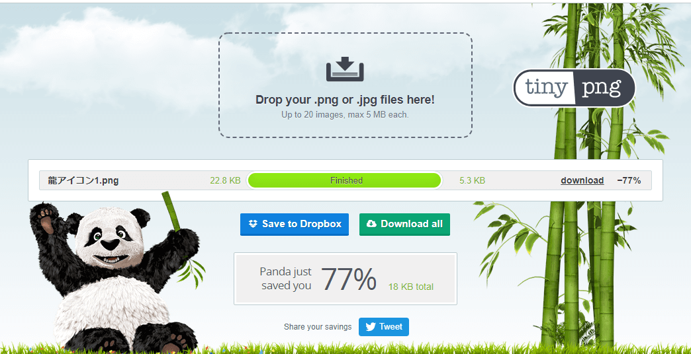
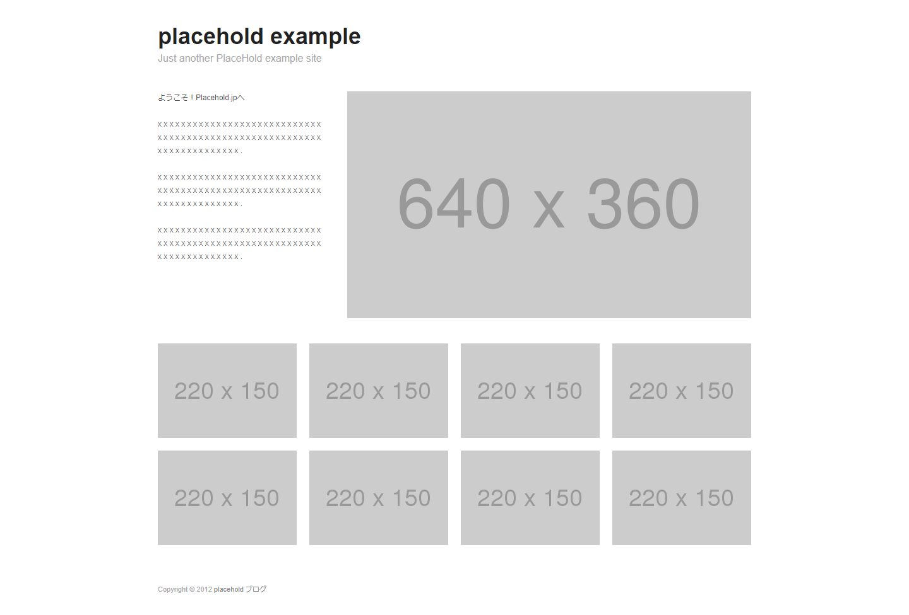
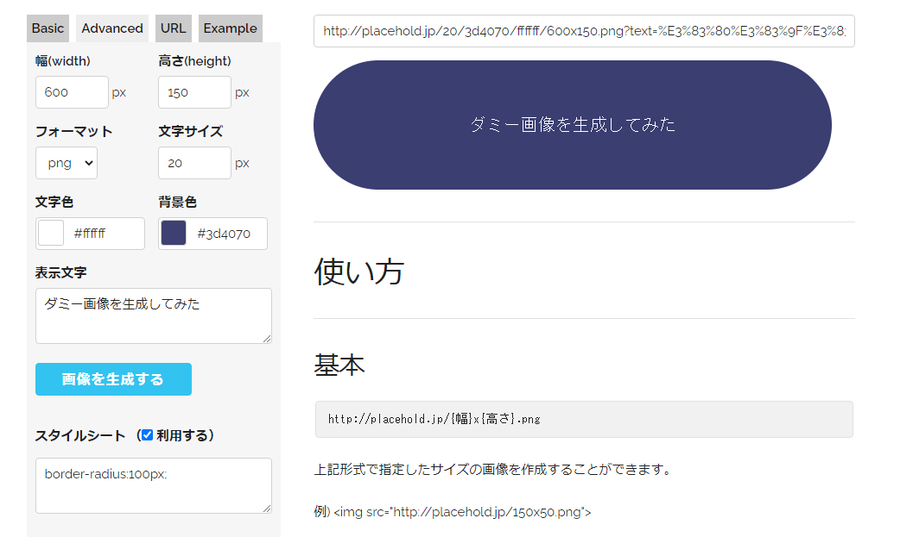

サイトがちゃんと完成しているかチェックするためのサイト
HTML/CSSチェッカー
完成したファイルに打ち間違いやWeb標準に違反してないかをしらべることができるサイト
両方ともW3CというWebのルールに深く携わっているところが運営してるサイトなので信頼度は抜群。CSSのほうだけ何故か日本語化されている。
使い方
- 既に存在しているサイトのURLを入力する
- パソコン内にあるHTMLやCSSファイルを直接アップロードする
- テキストエリアに直接文字を入力したりコピペしたりする
主に2番の使い方をすることが多いと思います。他にも色々オプションがあったりしますがここでは割愛。
画像のalt属性チェック
画像にalt属性を付けるのは必須ですが時々忘れることがあります。
それを防ぐために完成したサイトにこのブックマークレットを使えばサイトに使われている画像とalt属性を一覧で見ることができます。
altチェック用ブックマークレット - GitHub
javascript:(function(){var rid='TW_alt_check';if(document.getElementById(rid))return;function e(t){return document.getElementsByTagName(t)}function a(o,a){return o.getAttribute(a)}var i=e('img');if(i.length<=0)return;var r=document.createElement('div');var rcss='padding:5px;position:absolute;top:0;left:0;background:#fff;border:solid%20#ccc%201px;z-index:999;';var%20 tblcss='%20style=\'border-collapse:collapse;background:#fff;\'';var%20 tdlcss='%20style=\'padding:4px;border-bottom:solid%20#ffffff%202px;text-align:right;\'';var%20 tdrcss='%20style=\'padding:4px;border-bottom:solid%20#ffffff%202px;text-align:left;\'';r.id=rid;r.style.cssText=rcss;var%20 h='%3Ctable'+tblcss+'>';for(var%20 j=0;j<i.length;j++){h+=(j%252==0)?'<tr%20bgcolor=#f6f6f6>':'<tr%20bgcolor=%23f2f2f2>';h+='%3Ctd'+tdlcss+'%3E%3Cimg%20src='+a(i[j],'src')+'%3E%3C/td%3E%3Ctd'+tdrcss+'%3E'+a(i[j],'alt')+'</td></tr>'}h+='</table>';e('body')[0].appendChild(r);r.innerHTML=h;r.ondblclick=function(){this.parentNode.removeChild(this)};window.scrollTo(0,0)})()
上記サイトにあるコード
使い方
- 適当なサイトをブックマークする
- ブックマークした項目を編集し名前欄を「画像のalt属性チェック」など適当につけてURL欄に上記のコードをコピーしていれます。
- 適当なサイト（TRYZEのサイトなど）を開いて「2.」で完成したブックマークレットと呼ばれるものをクリックして一覧が表示されれば問題なく実行できてます。
Web制作するときに便利なサイト
Can I use...
HTML要素やCSSプロパティなどのWeb関係のものが最新のブラウザに対応しているか、いつから対応しているかを知ることができるサイト。
使い方
例えば最近広まっている"WebP"というGoogleが開発しているJPEG, PNGに代わる軽くて高画質な画像ファイルはどこまでのブラウザが対応しているかが見れます。（以下のサポート状況はすべて2021年1月21日のものです）
Can I use... "WebP image format"
対応の種類は大きく3つに分かれていて
- 緑色は問題なく対応しているブラウザ
- 黄色は部分的に対応していたり注意が必要なブラウザ
- 赤色は全く対応されていないブラウザ
になっています。
WebPの場合は
- "Chrome, Edge, Opera"など"Chromium系"は対応している。
- "Firefox"も対応している。
- "Chromium系"のモバイル機種の"Chrome for Android"でも対応。
- 似たモバイル機種の"iOS"では2020年9月にリリースされた最新のiOS14から対応。
- Macのデフォルトブラウザの"Safari"は最新のOSである"macOS 11 Big Sur"にインストールされた"Safari 14"でないと対応してない。という特殊な条件があるので黄色の表示。
- IE (Internet Explorer)はもう更新されないので最新技術には対応されないはずなので永遠に赤色の表示。
ということが読み取れるので、古い端末を利用している人を切り捨ててある程度最新の状態を維持できてるユーザーが多く訪れることを想定しているWebサイトなら既にガンガン使える技術ということがわかります。
他の要素やプロパティも見ていくと"h1"と誰でも必ずHTML要素は"HTML element: h1"を見ると主要ブラウザで全て緑色になっており問題なく使えることがわかります。
逆に"Lazy loading via attribute for images & iframes”という最近追加された画像やiframeの読み込むタイミングを指定できる属性はほぼ赤色で"Chromium系"のみ使えて"FIrefox"は画像のみ対応ということで使うには注意が必要なことがわかります。
TinyPNG
PNGとJPEGを見た目損なわずにファイルサイズを削減してくれるサイトです。特にPNG画像で威力を発揮します。透過済のPNGファイルでも透過済のまま圧縮できます。
使い方
- 圧縮したいファイルをアップロードする（一度に最高20枚、1ファイル5MBまで可能。それ以上に一度で圧縮したい場合は有料プランへ）
- 圧縮されるのを待つ
- 「download」ボタンを押す
- 複数ファイルをアップロードした場合は「Download all」を押すとzipでまとめてダウンロードできます
サンプルとして手元にあったPNGアイコンをアップロードしてみました。

アップロードし圧縮し終えたときの様子
上記の通り-77%とだいぶ削減されてイメージキャラクターのパンダも喜んでいるのがわかります。
下記に比較ファイルを置きますがこのようなシンプルな色数のアイコンだと違いが分からないほどです。恐らく使ってない色情報や人間の目には判別しづらい色を同色にして情報の削減をしていると予想します。
もちろん元の画像サイズ（512x512という大きさの方のサイズ）は維持されています。
JPEGにも使えますがPhotoshopで適切な圧縮率で書き出していればそんなにファイルサイズは変わらない印象があります。
余談
このサイトは上記の通り有料プランがあったり、これまた有料ですが"Photoshop Plugin"として販売されていたり"Wordpress Plugin"や”Developer API”が提供されていてWordPressに上げた画像を自動で圧縮してくれたり、TinyPNGを使ったプログラムを自作したりすることもできたりとやれることの幅は想像以上に多いです。
codic
このサイトは上記の通り有料プランがあったり、これまた有料ですが"Photoshop Plugin"として販売されていたり"Wordpress Plugin"や”Developer API”が提供されていてWordPressに上げた画像を自動で圧縮してくれたり、TinyPNGを使ったプログラムを自作したりすることもできたりとやれることの幅は想像以上に多いです。
会員登録しなくてもとりあえず使えます。会員登録するとオリジナルの辞書やシェア機能が使えるみたいです。
Placehold.jp
ダミー画像を簡単に生成できるサイトです。
サンプルとして公開されているサイトを見ると使い方がなんとなくわかると思います。

Placehold.jp Examples 2より
このように画像サイズは決まってるけど中身はまだ完成してないとか作ってない。とりあえず画像を入れたときのイメージを知りたいというときに使うと便利です。
さらにオプションも豊富で文字を変えたり色を変えたりCSSを入力して画像を加工したりすることもできます。
作ってみた画像

作成過程
更に http://placehold.jp/150x150.png などのURLに直接アクセスするとオプション（ここでは150x150のPNG画像）で指定された画像が表示されるので
というコードを挿入すれば画像を生成してダウンロードしなくてもそのままサイト上に表示できます。
<img src="https://placehold.jp/150x150.png" alt="ダミー画像">
詳しい使い方はサイトのトップページに全て書いてあるあるのでそちらでどうぞ。
Placehold.jp 利用規約を見ても難しいことは特に書いてないのである程度自由に使えると思いますが、しっかりした本番サイトでそのままURLを埋め込んで使うのは迷惑がかかる気がするし禁止事項に触れる可能性もあるのでお勧めしないです。

{kind=link}